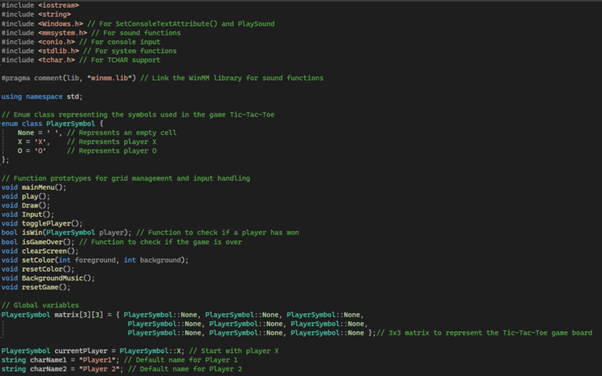

Noughts and Crosses in C++
A classic console-based game demonstrating core programming principles.

This project presents an implementation of the classic Noughts and Crosses game in C++. It serves as a practical demonstration of utilizing fundamental programming concepts to create an interactive console application.
Technical Core
The development of this game focused on clean logic and efficient data handling:
- Data Structures: I used an
enum class PlayerSymbolto represent cell states and amatrix[3][3]to manage the board. - Control Flow: Logical checks for win conditions and draws are handled through specialized functions.
- System Integration: The game includes Windows API calls for sound effects and console color management.

Gameplay Mechanics
The game features a turn-based system where two players choose their symbols (X or O). The interface is designed to be user-friendly, providing clear instructions and validating every move to prevent illegal plays or overwriting symbols.
"The game ends when a player creates a row of three identical symbols horizontally, vertically, or diagonally, or when the board is full, resulting in a draw."
Reflection & Learning
Implementing this game strengthened my understanding of algorithms for turn-based systems and input validation. I focused on creating a clean user interface within the console, adding personal touches like player names to make the experience more engaging.
Looking forward, this foundation in C++ logic will be instrumental as I move towards more complex data structures and visually sophisticated games.